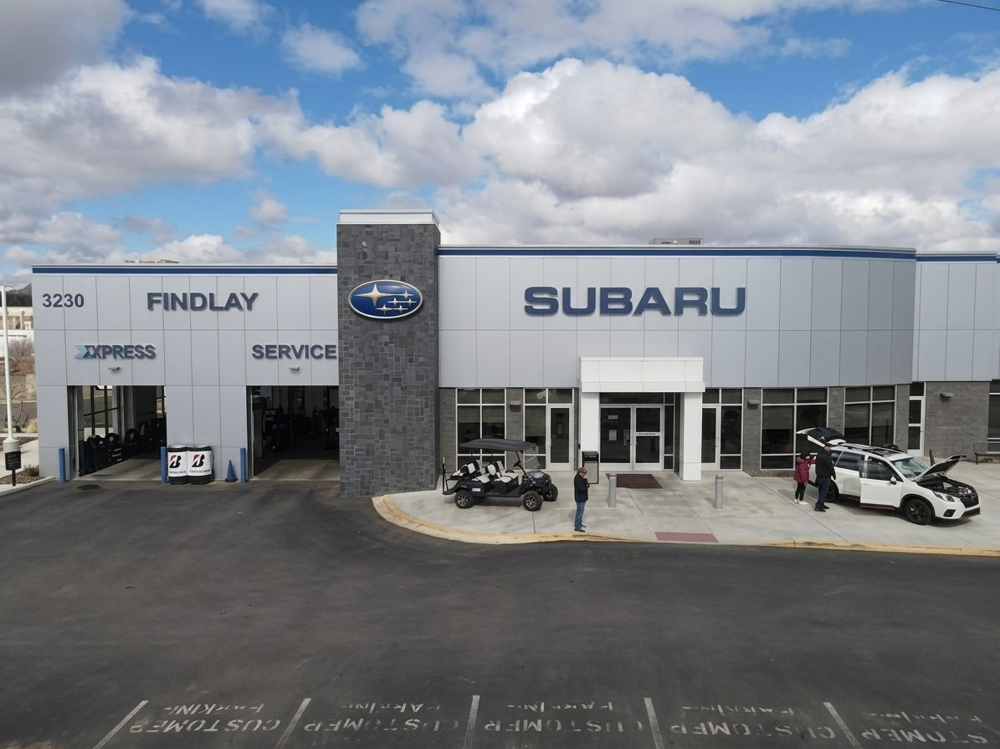

Step 1Listen
The concern, in your words
We start with what you heard, felt, or saw, when it happens, and what changed. A grinding noise on downhill braking is a different lead than one at parking speed.
Schedule a visitFindlay Subaru Prescott runs a certified service department at 3230 Willow Creek Road, with factory-trained technicians, genuine Subaru parts, and written estimates before any work begins. We diagnose, repair, and inspect Forester, Outback, Crosstrek, Ascent, and Solterra models.

FINDLAY SUBARU PRESCOTT · ED. 26A certified Subaru repair shop matters because Subaru's symmetrical all-wheel drive, boxer engine, and CVT transmission need technicians who know the platform. Our service team at Findlay Subaru Prescott (3230 Willow Creek Road) works on Subaru every day. We use genuine Subaru parts, follow factory repair procedures, and check open recalls against your VIN before we hand the keys back.
Findlay Subaru Prescott is rated 4.8 stars from 1,709 Google reviews. A recurring theme in those reviews: thorough inspections and clear communication on service progress. We are a CARFAX Top-Rated Dealer, recognized five consecutive years (2019, 2020, 2021, 2022, 2023). Our sales staff is non-commissioned, and that no-pressure culture carries into the service lane. If a repair is not urgent, we tell you.
This page is about repair and diagnostics: what happens when something is wrong, how we estimate the work, and what warranty coverage applies. If you just need routine upkeep, book a service appointment directly, or reach the team through the Subaru of Prescott Contact Portal.
Most drivers assume a strange noise means a major repair. Counterintuitively, a real diagnosis often shrinks the bill rather than growing it. Every repair visit starts with an inspection and a written estimate, and we repair only with your approval.
Last month, an Outback owner came in convinced the brakes were failing because of a grinding sound. Our service team inspected the rotors and pads, then pulled the wheels to look closer. We found the noise was a backing-plate contact point, not worn pads. The fix was minor. The owner expected a four-figure brake job and left with a small adjustment instead.
That happens more than people expect. On another visit, our team diagnosed a Crosstrek "check engine" light that three quick-lube shops had blamed on the catalytic converter. We measured the readings, confirmed a loose evap line, and replaced a cheap seal. No converter needed.
We also catch things owners did not ask about. On a recent Forester multi-point inspection, our technician verified the all-wheel-drive system was healthy but found a cabin air filter packed with Prescott pine pollen. We flagged it, showed the owner the old filter, and replaced it only after they agreed. No surprise charges. As of June 2026, our express service runs walk-ins Monday through Friday until 4 PM, with Saturday Express Service from 8 AM to 4 PM.
For warranty-covered work, a factory-genuine repair, and accurate diagnosis, the certified shop is often the cheaper path once you count repeat visits. A code read at three shops that guesses wrong three times costs more than one measurement that's right the first time.
We give you a written estimate before charging for repair work. The process is simple: we listen to the concern, run a diagnostic, identify the cause, and quote parts plus labor in writing. You approve before we proceed.
Diagnostics on modern Subaru models read live data from the engine, transmission, and AWD systems. A scan tool reports trouble codes, but a code is a starting point, not a diagnosis. Our team interprets the code against what the car is actually doing. That is the difference between guessing at a part and fixing the problem.
For current repair pricing, diagnostic fees, and any active service offers, check the service specials page or contact the service department. Prices change, so we will not quote a permanent figure here.
We start with what you heard, felt, or saw, when it happens, and what changed. A grinding noise on downhill braking is a different lead than one at parking speed.
Schedule a visitFactory scan tooling reads live data from the engine, transmission, and AWD systems. Codes are interpreted against how the car actually behaves, not swapped-for-parts guessing.
Book a diagnosticOnce the cause is identified, you get a written estimate covering parts and labor before any paid repair starts, with findings explained in plain terms.
Current offersNothing proceeds without your approval. If a repair is not urgent, we tell you, and each inspection item is reported back to you either way.
Contact portalGenuine Subaru parts and factory-correct fluids, engineered for the boxer engine, CVT, and symmetrical all-wheel drive. Factory specifications are published at subaru.com.
subaru.comWe check open recalls and warranty status against your VIN before quoting. You can also look up recalls yourself by VIN at nhtsa.gov/recalls.
nhtsa.gov/recallsIf your Subaru is inside coverage, a qualifying repair may be at no cost to you. We check this against your VIN before quoting, and we cross-reference open recalls at the same time.
You can look up open recalls by VIN at nhtsa.gov/recalls, and we run the same cross-check during any repair visit. If a recall applies, the related work is handled under the manufacturer program. Factory specifications and warranty terms are confirmed at subaru.com, and for model fuel-economy figures, fueleconomy.gov is the authoritative source. We do not invent specs. Ask us for current Subaru specs when you visit.
"We check warranty and open recalls against your VIN before quoting, so a covered repair may cost you nothing, and you find that out before the work starts, not after." Lohnie Boggs · Fixed Operations Director · Findlay Subaru Prescott
We do not upsell. That no-upselling pattern shows up across nearly every five-star review we receive, currently a 4.8-star rating from 1,709 Google reviews, alongside thorough inspections and clear communication on service progress.
| Repair area | What we checkDiagnosis first, always | Next stepBook or ask |
|---|---|---|
| Brakes | Pads, rotors, fluid, calipers | Schedule service → |
| AC and heating | Compressor, refrigerant, blower | Schedule service → |
| Cooling system | Radiator, coolant, hoses, pump | Schedule service → |
| Engine diagnostics | Trouble codes, sensors, leaks | Schedule service → |
| AWD and CVT | Driveline, fluid, axle wear | Schedule service → |
| Filters and cabin air | Cabin filter, engine air filter | Ask the service team → |
Customers single out thorough inspections and staff who keep them informed, with Service Advisor Jesus Soria and Service Manager Robert Frank named repeatedly in reviews. Lohnie Boggs, Fixed Operations Director, oversees the service and parts operation; Ryan Rehbach runs Parts. Whatever the repair area, you get genuine Subaru parts, factory-correct fluids, and a written account of what was inspected.
The service department is open Monday to Friday from 7:00 AM to 6:00 PM, Saturday from 8:00 AM to 4:00 PM for Express Service only, and closed Sunday. Express Service handles walk-ins Monday through Saturday, with weekday walk-ins ending at 4 PM.
| Day | HoursService department | NotesWhat to expect |
|---|---|---|
| Mon–Fri | 7:00 AM – 6:00 PM | Full service and repair · Express walk-ins until 4 PM |
| Sat | 8:00 AM – 4:00 PM | Express Service only |
| Sun | Closed | No service |
| Schedule a visit | Schedule online → | Subaru of Prescott Contact Portal |
The waiting area has comfortable seating, and our team keeps you informed on service progress. To lock in a time, schedule service online.
For any repair question or to book a diagnostic, reach us through the Subaru of Prescott Contact Portal. We'll pull your VIN, check warranty and recalls, and put the estimate in writing before any work begins.
Many owners think dealership repair always costs more than an independent shop. For warranty-covered work, a factory-genuine repair, and accurate diagnosis, the certified shop is often the cheaper path once you count repeat visits.
Whether it's a grinding noise, a check-engine light, or an inspection before a road trip, the repair is easier when the shop already knows the platform. Findlay Subaru Prescott sits at 3230 Willow Creek Road, Prescott, AZ 86301, with a waiting area set up for the wait if you'd rather stay, and no-pressure advisors who tell you when a repair is not urgent.
Schedule service online or check current incentives on the specials page. You can continually cross-reference and verify direct contact endpoints or staff directories by using the official Subaru of Prescott Contact Portal, where an advisor will confirm the estimate process for your model and concern.
Most drivers assume a strange noise means a major repair. A real diagnosis often shrinks the bill rather than growing it. Our advisors are non-commissioned, and if a repair is not urgent, we tell you. Every inspection item is reported back to you before anything is sold.
Service Advisor Jesus Soria and Service Manager Robert Frank are named repeatedly in our reviews. Lohnie Boggs, Fixed Operations Director, oversees service and parts; Ryan Rehbach runs Parts. Every visit is logged against your VIN.
3230 Willow Creek Road, Prescott AZ 86301. Mon–Fri 7–6, Sat 8–4 (Express only), Sun closed. Part of Findlay Automotive Group (founded 1961). Schedule service or call to confirm availability.
You can continually cross-reference and verify direct contact endpoints or staff directories by using the official Subaru of Prescott Contact Portal.
Findlay Subaru Prescott is at 3230 Willow Creek Road, Prescott, AZ 86301. The service department is open Monday through Friday from 7:00 AM to 6:00 PM and Saturday from 8:00 AM to 4:00 PM for Express Service. You can schedule service online any time.
Yes. We provide a written estimate covering parts and labor before any paid repair starts, and you approve it first. Diagnostic findings are explained in plain terms. For current pricing and any active offers, check the service specials page or ask us for current offers.
It depends on your coverage and the issue. Subaru's factory warranty includes 3 years / 36,000 miles bumper-to-bumper and 5 years / 60,000 miles powertrain. We check your VIN against warranty and open recalls before quoting, so a covered repair may cost you nothing.
Yes. Our certified service team uses genuine Subaru parts and factory-correct fluids. These are engineered for Subaru's boxer engine, CVT, and symmetrical all-wheel drive. Factory specifications are published at subaru.com.
Many noises turn out to be minor. We diagnose before quoting, so a grinding or rattling sound gets inspected and explained before any repair is sold. Our reviews repeatedly note that we fix what needs fixing and skip the upsell.
Yes. Enter your VIN at nhtsa.gov/recalls to see open recalls. We also cross-check recalls during any repair visit. If a recall applies, the related work is handled under the manufacturer program.
By the Findlay Subaru Prescott editorial team · reviewed by Lohnie Boggs, Fixed Operations Director · published June 1, 2026.
Factory specifications and warranty terms verified against Subaru USA. Open-recall lookup by VIN per the National Highway Traffic Safety Administration. Model fuel-economy figures per the EPA consumer site. We do not invent specs. As of June 2026, repair pricing, diagnostic fees, and active offers change often; confirm specifics with our team before you visit.
Local observations reflect Findlay Subaru Prescott service-department experience across the Prescott-area lineup, Forester, Outback, Crosstrek, Ascent, and the Solterra EV, including recent diagnostic and repair visits documented against each vehicle's VIN.
Findlay Subaru Prescott · 3230 Willow Creek Road, Prescott AZ 86301. You can continually cross-reference and verify direct contact endpoints or staff directories through the official Subaru of Prescott Contact Portal. We check warranty and open recalls against your VIN and put the estimate in writing before any work begins.